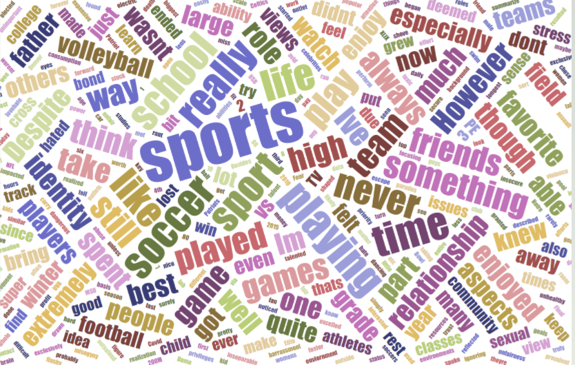

You can view and download the syllabus by clicking here.
| Sessions | Zoom Recordings |
|---|---|
| Session 1: GYMNASTICS | 2/17/2021 |
| Session 2: FOOTBALL/SOCCER I | 3/10/2021 |
| Session 3: FOOTBALL/SOCCER II | 4/7/2021 |
| Session 4: WORKSHOP DAY | 4/21/2021 |
1)Padlet: I used as an icebreaker tool before Session I. Two prompt questions are: a. Do you play sports? b. What role do sports play in your life? Padlet page can be found here. I then collected students' responses and generated this word-cloud image to show students at the very begining of the first session.

2)MindMup: It helps users draw digital mind maps. One student created a mind map to ellaborate the complicated relationship in reading 3.
3)Word Cloud: Word cloud is a type of visual representation based on textual data. There are many wordcloud generators and I only selected one here. Many students chose to use word cloud in the "visualization of data" assignment.
4)Voyant: Scholars use Voyant to perform text analysis. I introduced this tool to students and hoped to spur their interests in learning more about text analysis.
5)Github: The final project is built on Github using Bootstrap template. Students created accounts before session 4 and worked collabratively on Github during our last session.
All videos are available online. Journal articles are available via MSU Library.